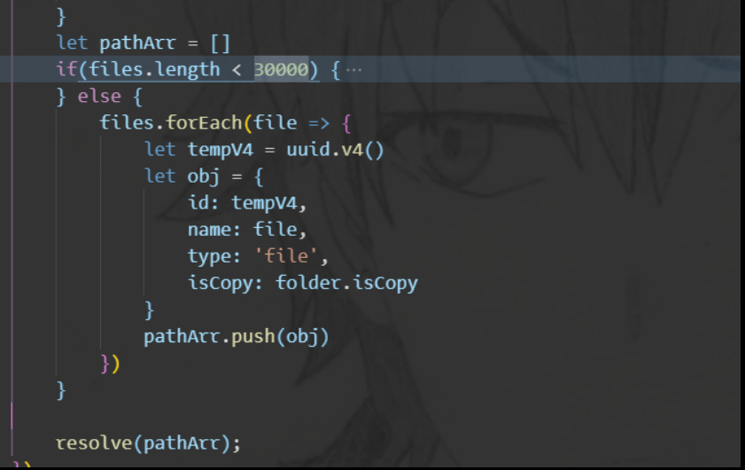

项目总结
1. 3D WebGIS(2020.03)
Cesium + echart + Jquery + bootstrap，后端用地理服务器，有个资产模型 3d tiles
1.1 坐标转换，js 怎么处理精度问题
JavaScript 内部，所有数字都是以 64 位浮点数形式储存，浮点数分为三部分：符号位，指数位，尾数位置

精度产生的原因：0.1 0.2 这种转化为二进制码是有误差的，尾数是一个不断循环的数，但是浮点数的尾数只有 52 位，省略了一部分，所以就会产生误差；其次是在对接操作的时候会损失掉一部分尾数
toPrecision 和 toFixed 都是把数字转换为字符串展示，在计算过程中不要使用
toPrecision是处理精度，精度是从左至右第一个不为0的数开始数起。toFixed是小数点后指定位数取整，从小数点开始数起。
如果用 toFixed 来做四舍五入会有bug，如：1.005.toFixed(2)返回的是1.00而不是1.01，原因：1.005实际对应的数字是1.00499999999999989，在四舍五入时全部被舍去！ 不过 (1.005).toPrecision(4) ===> 1.005，可以自己写一套字符串逻辑去处理：
if(!Number.prototype._toFixed) {
Numger.prototype._toFixed = Number.prototype.toFixed
}
Number.prototype.toFixed = function(n) { // 加上一个非常小的数就解决了
return (this + 3e-16)._toFixed(n)
}
误差主要产生在进制转化和浮点数运算的对阶操作，整数由于尾数后面全是 0 ，同时转为二进制数就没有误差，所以可以将数字全部转为整数，计算完再转化为小数：
function add(num1, num2) {
const num1Digits = (num1.toString().split('.')[1] || '').length
const num2Digits = (num2.toString().split('.')[1] || '').length
const baseNum = Math.pow(10, Math.max(num1Digits, num2Digits))
return (num1 * baseNum + num2 * baseNum) / baseNum
}
有现成的库 mathjs，原理是不走浮点数这套，将数字转换为字符串，自己实现运算逻辑
1.2. 地图渲染速度的问题
不使用 Vue 的原因，速度慢，会产生数据劫持，如果将 cesium.js 初始化的地图对象保存在 Vue 实例上，地图对象会经常更新，数据更新了 DOM 也要同时更新，会十分的卡顿，所以就用纯 js 写的，然后将地图对象绑定到 window 上了
但是地图渲染过程中还是有明显的卡顿，最后发现是滚动条的出现改变了页面主体的宽度，容器宽度的变化导致 Cesium 触发它的 resize 操作，然后长时间的 JS 阻塞导致了卡顿，解决办法：overflow: hidden
2. OpenGMS 门户(2020.06)
vue + spring
2.1 spring 循环依赖
2.2. 跨域
3. 太阳辐射模型平台（2020.09)
vue + spring
3.1. mongodb 地理空间查询
MongoDB 为了坐标平面查询专门提供了专门的索引，叫地理空间(2d)索引
- 创建地理空间索引 location: [维度，经度]，一个数组，必须维度在前，经度在后
- 然后就可以使用地理空间索引了
4. 泛在
React
数据容器后端
vue
- 较大数据的存储，一个文件夹的存储，接近十万个文件，同时复制太多文件会崩掉，
在 Node 中我们可以十分方便的利用异步和并行来提升我们的业务速度，但是并发量过大，我们的服务器却可能吃不消，需要限制并发量。但是自己是对文件系统大量并发调用，操作系统的文件系统描述符很快被自己用光了，所以需要在尽量压榨底层性能的情况下，还要保护它。原理是通过队列限制，这里我是用 bagpipe 来解决的。bagpipe 的原理：
- 通过一个队列来控制并发量
- 如果当前活跃的（指调用发起但未执行回调）的异步调用值小于限定值，从队列中取出执行
- 如果活跃调用达到限定值，调用暂时存放在队列中
- 每个异步调用执行结束时，从队列中取出新的异步调用执行
bagpipe 类似于打开了一道窗口，允许异步调用并行执行，但是严格限定上限，
拒绝模式：大量的异步调用，可能请求等不了这么久，需要快速失败，让调用方尽早返回，而不用浪费不必要的等待时间
超时控制：为每个异步调用设置要给时间阈值，如果异步调用没有在规定的时间内完成，我们先执行用户传入的回掉函数，让用户得到一个超时异常，以尽早返回
- child_process spawn 终端输出过多会导致栈溢出，但是又没有错误提示
使用 spawn 的时候，子进程有太多的日志输出，导致该子进程卡在那里，没有正常或者异常的退出，文件也被占用着，最坑的是一点提示都没有
exec 的 option 默认为：
{
encoding: 'utf8',
timeout: 0, /*子进程最长执行时间 */
maxBuffer: 200*1024, /*stdout和stderr的最大长度*/
killSignal: 'SIGTERM',
cwd: null,
env: null
}
注意 maxBuffer 这个参数，如果 stdout 的值超过 200 k 的时候就会杀死进程，其实spawn 表现的更差，当 spawn 的子进程的 stdout 更多的时候会出现我前文说过的问题，文章中说 spawn 没有 maxBuffer 限制，但是我个人感觉还是有 maxBuffer 的类似限制。exec 在使用便捷上要超过 spawn，且执行速度上也相差无几，但是这种便携性要付出一定的代价。在exec的options中，有一项是 maxBuffer，如果执行的 command 输出超出了这个长度，不管是采用回调函数的方式，还是emit data 事件方式传递结果，都会抛出 maxBuffer exceeded异常，并且杀死子进程
- mongo 一个记录不能超过 16 M以及一个 array 的分页
database -> collection -> document
接近十万个文件的文件，如果按原来的方法会组成一个超过 16 M 的 json 对象，插入 MongoDB 的时候会报错（网上说的没有提示），自己也没有好的处理的办法，就减少了一些属性

后端的分页：
Instances.find(query).skip((currentPage - 1) * pageSize).exec((err, data) => { }) // document的分页
doc.slice(pageSize * (currentPage - 1), pageSize * currentPage) // array 的分页